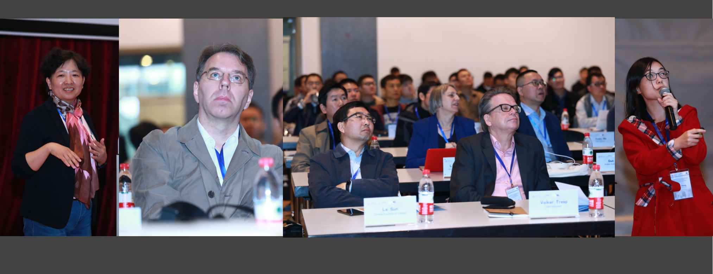
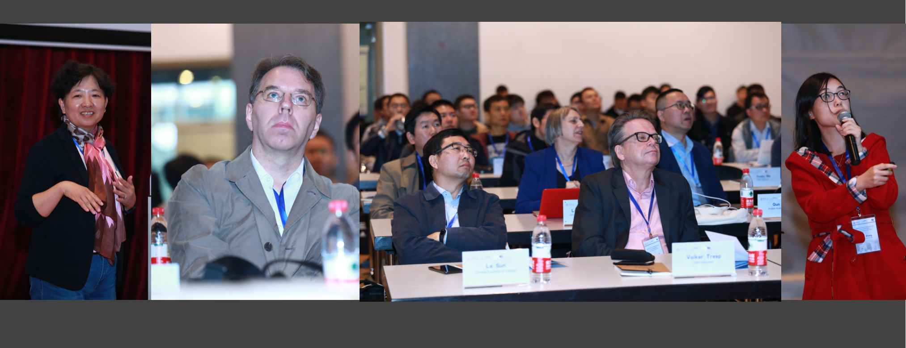
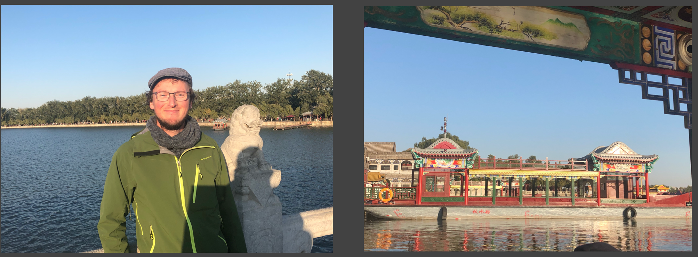
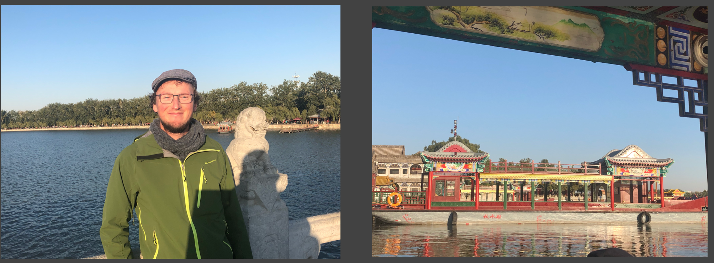
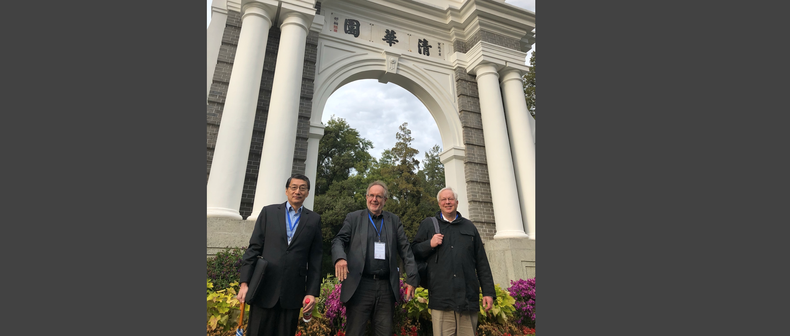
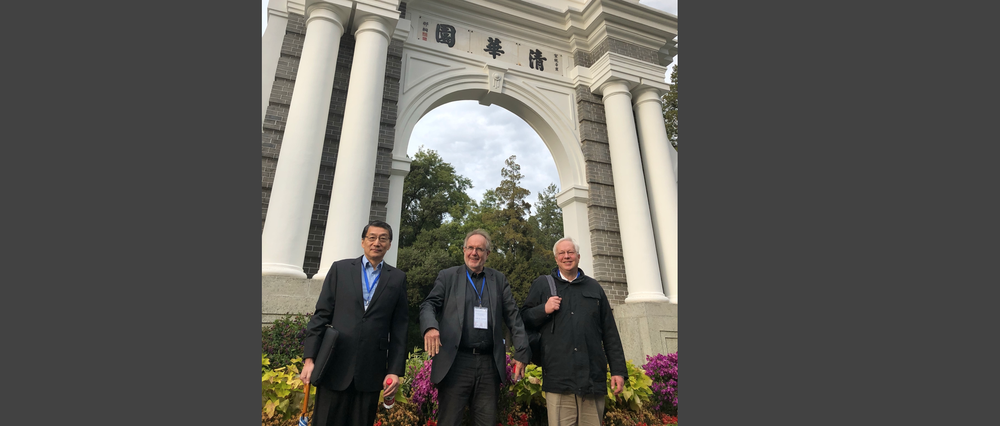

09:00 - 09:20 Welcome Oration by Prof. Armin B. Cremers
09:20 - 09:40
Error Boundary Definition / AI Verification by Ke Zhu (Nisar.AI)
09:20 - 09:40
Error Boundary Definition / AI Verification by Ke Zhu (Nisar.AI)
10:30 - 11:00 Photo Taking and Coffee Break
11:00 - 12:30 Session 4: Knowledge and Language 1
Chair: Achim Rettinger (Universität Trier)
Learning Taxonomies of Concepts from Contextualized Word Embeddings (Steffen Staab, Universität Koblenz)
Representation Learning for Complex Words and Phrases (Erhard Hinrichs, University of Tuebingen)
Towards a Unified Semantic Embedding Space: Joint Representation Learning of Cross-lingual Words and Entities (Juanzi Li, Tsinghua University)
Knowledge-Guided Natural Language Processing (Zhiyuan Liu, Tsinghua University)
12:30 - 14:00 Lunch Break
14:00 - 15:40 Session 5: Knowledge Linking and Reasoning
Chair: Tiansi Dong (Universität Bonn)
Symbolic and Sub-symbolic Approaches to Intertextuality (Alexander Mehler, Goethe-Universität Frankfurt am Main)
Embedding-based Entity Alignment for Knowledge Graphs (Wei Hu, Nanjing University)
Differentiable Reasoning with Knowledge Graphs: Explanations and Sparsity (Huajun Chen, Zhejiang University)
Revisiting Name Disambiguation (Jing Zhang, Renmin University of China)
Triadic Closure Pattern Analysis and Prediction in Online Social Networks (Xiaoming Fu, Universität Göttingenn)
15:40 - 16:00 Coffee Break
16:00 - 18:00 Session 6: Taxonomy Representation and Learning
Chair: Alexander Mehler (Goethe-Universität Frankfurt am Main)
Schema Induction on Knowledge Graphs under Open World Assumption (Guilin Qi, Southeast University)
Generating Relational Facts from Texts by an End-to-End Neural Model (Kang Liu, Institute of Automation@CAS)
Geometric Connectionist Machine for Symbol Spatializing (Tiansi Dong, Universität Bonn)
18:00 - 20:30 -- Dinner --


 


 

 
